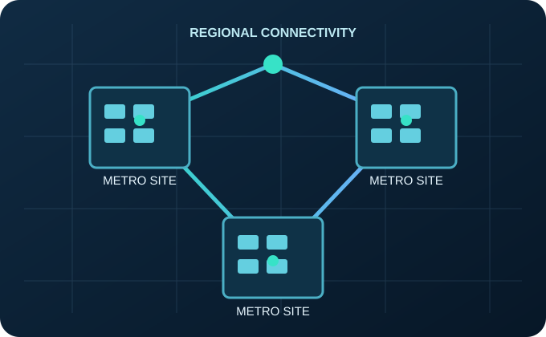

Facility Management
Coordinate power, cooling, security, preventative maintenance and site readiness.
OrionNet365 Net-Bridge Services integrates facility oversight, network connectivity and coordinated technical operations through a fully managed service model designed for metropolitan data center environments.

OrionNet365 serves as the accountable point of coordination for facility and network operations, drawing on specialized technical providers and service partners to meet customer requirements.
Coordinate power, cooling, security, preventative maintenance and site readiness.
Plan and manage carrier coordination, connectivity services and network infrastructure support.
Establish monitoring, incident response, escalation procedures and operational reporting.
Coordinate service delivery, change management, documentation and customer communications.
Multiple qualified sites can support different customer locations, connectivity needs and growth plans under a coordinated service model.
Facilities in different parts of a metro area can offer location choices and support customer-specific continuity strategies.
Carrier relationships and private network options can connect facilities, customers and established network ecosystems.
Incremental facility activation can align additional capacity with qualified properties and contracted demand.
Consistent monitoring, escalation, maintenance and service management can span multiple local facilities.
Specific service availability, performance commitments and recovery objectives are established through site readiness reviews and customer agreements.

OrionNet365 provides a unified managed-services approach through Net-Bridge, coordinating facility operations, connectivity and technical support using specialized service providers as required. Each engagement defines the delivery team, operating responsibilities, service availability and performance commitments for the specific site and customer.
Explore how an integrated operating model can support the long-term value of your infrastructure asset.